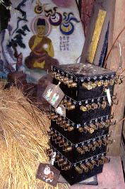

養老の滝/千葉県大多喜町
「養老の滝」（居酒屋ではない）に至る門である。
道の向かいには温泉宿があり、この門もその付属施設と思われる。
御覧のように一本の丸太から彫られた異様な彫刻像は我々の持つ彫刻の概念を軽く吹き飛ばしてくれる。
それは彫刻というジャンルが通常到達し得ない、絵画のような「物語性」を獲得しているからに他ならない。
一本の木材に刻み込まれた複数の人物像のスペースの取り合い、せめぎ合いに注目して頂きたい。
山間の一軒宿の前に建つこの山門と怪しい彫刻群、衝撃的な物件であるにも関わらず、扱いはおざなりだ。
観光客も見て見ぬふり、さっさと滝へと行ってしまう。
美術館のケースに納められる位ならここで雨曝しになっているほうが似合ってはいるが。

賽銭箱、新しいぞ。
2000.5.
珍寺大道場 HOME